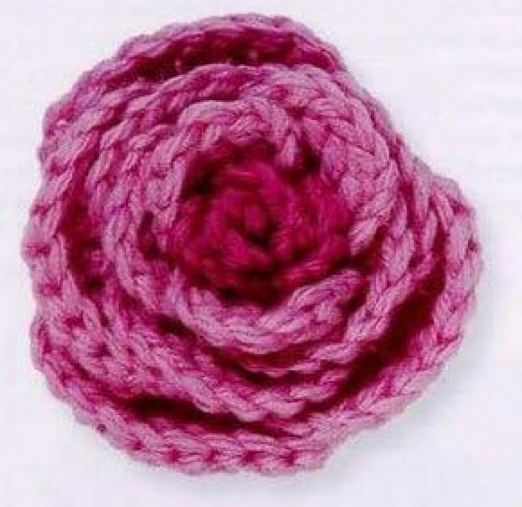
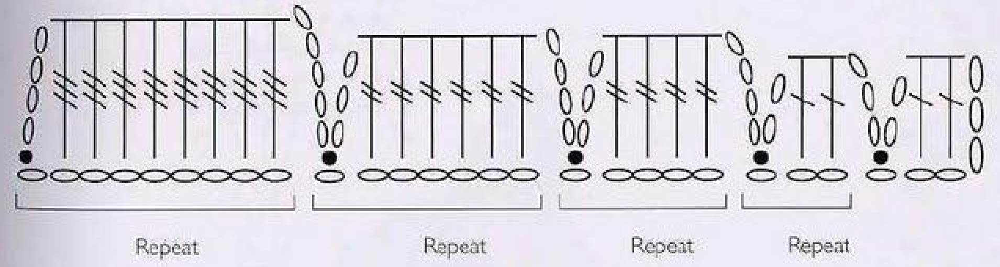
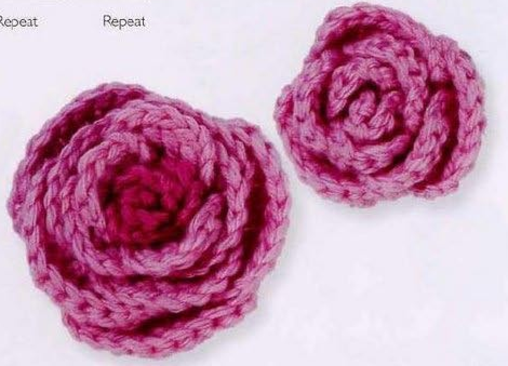
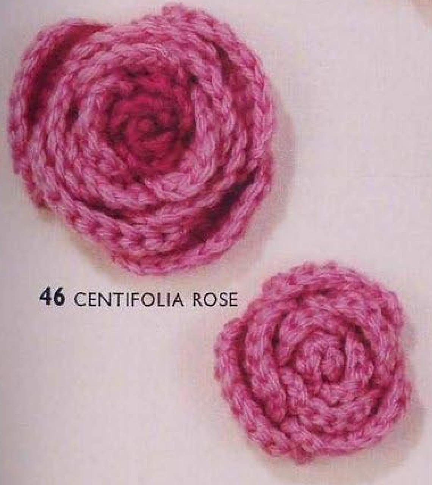

A crochet Centifolia Rose is made by working progressively larger petals along a foundation chain, then coiling and sewing the petal strip into a layered flower. Pattern 46 in Lesley Stanfield’s 100 Flowers to Knit & Crochet includes a sixteen-petal large rose and a nine-petal small version. This guide retains both source recipes, explains them in US terms, and includes the original chart and finished-flower photographs.

Key Takeaways
- Use DK wool in deep pink A and pale pink B for the large rose.
- The large version starts with 99 chains and has four groups of four petals.
- Change from deep pink to pale pink after the first four petals.
- The small version starts with 48 chains in pale pink B and has three groups of three petals.
- Shape the petals, then coil from the smallest end and stitch along the chain edge.
CROCHET CENTIFOLIA ROSE FLOWER PATTERN
Project: A coiled rose with petals increasing in width and height. Directions below use US terms and preserve the large and small versions. Hook, gauge, dimensions, and yarn quantity are not supplied in the pattern entry; additional handling advice is practical guidance.
| Skill level | Not specified in the entry. Practical guidance: confidence with tall crochet stitches and sewing is useful. |
|---|---|
| Base size | One rose, either the sixteen-petal large version or nine-petal small version. Finished measurements are not given. |
| Yarn | DK wool: deep pink A and pale pink B for the large rose. The small recipe uses pale pink B. |
| Quantity | Not specified. Keep sufficient yarn for the chosen chain length, petals, and assembly. |
| Hook and gauge | Not specified. Choose a suitable hook for your DK wool and evaluate a sample. |
| Notions | Scissors, a blunt yarn needle, and optional markers for petal-group boundaries. |
| US abbreviations | ch = chain; sl st = slip stitch; dc = double crochet; tr = treble; dtr = double treble. UK tr = US dc; UK dtr = US tr; UK trtr = US dtr. |
| Large foundation | With deep pink A, ch 99. |
| Large petals 1-4 | Skip 3 ch. Work 1 dc into each of the next 2 foundation chains, ch 2, sl st into the next foundation chain. Then repeat ch 3, 1 dc into each of the next 2 foundation chains, ch 2, sl st into the next foundation chain three times. Continue with pale pink B. |
| Large petals 5-8 | Repeat ch 4, 1 tr into each of the next 4 foundation chains, ch 3, sl st into the next foundation chain four times. |
| Large petals 9-12 | Repeat ch 4, 1 tr into each of the next 6 foundation chains, ch 3, sl st into the next foundation chain four times. |
| Large petals 13-16 | Repeat ch 5, 1 dtr into each of the next 8 foundation chains, ch 4, sl st into the next foundation chain four times. Fasten off. |
| Small foundation | With pale pink B, ch 48. |
| Small petals 1-3 | Work the first small petal as for large petals 1-4, then repeat the bracketed ch 3 / two dc / ch 2 / slip-stitch sequence twice. This makes three petals total. |
| Small petals 4-6 | Work the large petals 5-8 sequence three times. |
| Small petals 7-9 | Work the large petals 9-12 sequence three times. Fasten off. Omit the largest double-treble group. |
| Assembly, both sizes | Press the petals to shape appropriately for the wool. Start with the smaller petals and coil the petal row, stitching as you go along the foundation chain edge to create a flat base. |
Understand the Graduated Petal Strip
The petals are made along a single foundation, so you do not crochet sixteen loose pieces and sew them together afterward. Each petal rises from the chain edge, crosses a short run of foundation chains with tall stitches, and returns to the edge with a slip stitch. The next petal starts immediately after that attachment. As the groups progress, both width and stitch height increase.
The first four petals of the large rose are narrow and relatively short. The second group becomes taller and wider, the third becomes wider again, and the fourth uses still taller stitches over eight chains. Coiling from the smallest end puts the compact petals at the center and the largest petals outside. Reversing that order would change the character of the flower.
The small rose is a separate recipe in the source. It does not simply stop the large rose halfway through its chain. It starts with 48 chains, uses three petals at each of the first three sizes, and omits the fourth size. Keep the two recipes distinct when counting your foundation and marking the group changes.
Materials and Color Placement
Choose DK wool in deep pink A and pale pink B for the large source version. The deep pink foundation and first petal group support a dark center, while the remaining pale pink groups create the outer layers. The instructions say to continue with B after petals one through four. Use that boundary rather than changing color at an arbitrary point in the strip.
For the small version, the written recipe begins with B and gives no subsequent color change. The page also contains finished rose photographs, which are useful references for shape. Follow the written small-rose color instruction rather than inventing an additional change from a photograph. A two-color small adaptation should be labeled as your variation.
Hook size, gauge, yardage, and dimensions are absent from the entry. Select a hook that allows you to make the tall stitches comfortably and assess your own fabric. Keep the yarn needle ready for assembly. If the wool is very fuzzy, removable markers at the boundaries between petal groups can prevent losing track of the completed petals.
Material checkpoint: The source gives yarn type and colors, plus two chain lengths. It does not provide measured small and large diameters. “Small” and “large” refer to the two construction recipes, not guaranteed measurements.
Translate the UK Chart into US Terms

The source uses three tall stitch names. UK treble becomes US double crochet. UK double treble becomes US treble. UK triple treble becomes US double treble. In this guide those are dc, tr, and dtr respectively. Chain and slip stitch are unchanged. A consistent translation is essential because the graduated heights are part of the petal shaping.
A US double crochet begins with one yarn over and finishes by drawing through two loops twice. A US treble begins with two yarn overs and finishes by drawing through two loops three times. A US double treble begins with three yarn overs and finishes by drawing through two loops four times. Practice the tallest stitch before reaching the final group if it is unfamiliar.
The chart abbreviates repeated petals with brackets. It shows how each group rises and returns to the foundation, rather than drawing all sixteen petals individually. Use the written group counts to determine how many times to repeat a unit. The rightmost small-petal unit corresponds to the beginning of the strip; the increasingly large units explain the progression toward the outer petals.
Start the Large Rose with 99 Chains
With deep pink A, make 99 chains. Count before beginning the petal sequence. Keep the chain relaxed enough for the hook to enter each foundation position without forcing it. The foundation becomes the sewn base of the rose, so large changes in tension along its length can make assembly harder even if the count is correct.
Skip the first three chains to create the opening rise for petal one. These skipped chains are part of the 99-chain foundation. The later rise chains are made as you work each new petal; they are not further skipped sections of the foundation. Confusing those two kinds of chains can consume the base too quickly and leave you short before the last group.
Large Petals 1-4: Build the Deep Pink Center
After skipping three chains, make one US double crochet into each of the next two foundation chains. Chain two, then slip stitch into the next foundation chain. This completes the first small petal. It has a rise, two tall stitches across its body, and a return to the chain edge.
For the next petal, chain three, make one dc into each of the next two unused foundation chains, chain two, and slip stitch into the next foundation chain. Repeat that sequence three times after the first petal to make four petals total. Do not make the initial petal and then four additional repeats; that would produce five.
Continue with pale pink B after the fourth petal. Check the count before changing color. If you mark the group boundary, you can later find the center-to-outer transition without counting every visible fold in the finished rose. Secure the color ends during finishing without creating a lump along the base.
Large Petals 5-8: Increase Height and Width
With pale pink B, chain four. Make one US treble into each of the next four foundation chains, chain three, and slip stitch into the next foundation chain. Repeat this entire sequence four times to make petals five through eight. Each petal consumes five foundation positions: four for treble stitches and one for its slip-stitch return.
Keep the return chain loose enough to descend to the base without pulling the petal body into a tight arch. Do not place all four treble stitches in a single foundation chain; the recipe uses one stitch in each of four consecutive chains. The difference is important because the petal width comes from the span across those chains.
Large Petals 9-12: Widen the Outer Layers
Chain four, work one US treble into each of the next six foundation chains, chain three, and slip stitch into the next foundation chain. Work this sequence four times. The rise and return lengths stay the same as the preceding group, but the body expands from four treble stitches to six.
Check each petal’s body before beginning the next rise chain. Six tall stitches can be harder to count once the strip begins curling. A marker after petal twelve provides a clear checkpoint before switching to the final and tallest group. The strip should now contain four small petals, four medium petals, and four wider petals.
Large Petals 13-16: Add the Tallest Petals
Chain five, make one US double treble into each of the next eight foundation chains, chain four, and slip stitch into the next foundation chain. Repeat four times, then fasten off. These are US double treble stitches, with three starting yarn overs, not the US treble stitches used in the preceding groups.
The foundation arithmetic checks the whole strip: three skipped opening chains, then four times three foundation positions for the smallest group, four times five for the next group, four times seven for the wider group, and four times nine for the largest group. The total is 99. The newly made rise and return chains do not count toward consumption of that foundation.
Large-rose checkpoint: Four groups of four petals give sixteen petals. If foundation chains remain or you run short, check the number of tall stitches and the final slip-stitch position in each group before changing the original chain count.
Keep Two Counts Separate
Count completed petals to track the group, and count unused foundation chains to track the base. A petal’s rise and return chains add height, while its tall stitches and closing slip stitch consume foundation positions. Separating those counts makes mistakes easier to locate.
Make the Nine-Petal Small Rose
For the small rose, use pale pink B and chain 48. Make the first petal exactly as the first large-rose petal: skip three chains, work two US dc across the next two foundation chains, chain two, and slip stitch into the next chain. Then work the ch-three, two-dc, ch-two, slip-stitch sequence twice more. You now have three small petals.
For petals four through six, work the medium sequence three times: chain four, one US tr into each of four foundation chains, chain three, and slip stitch into the next foundation chain. For petals seven through nine, use the wider sequence three times: chain four, one tr into each of six foundation chains, chain three, and slip stitch into the next foundation chain. Fasten off.
There is no eight-stitch double-treble group in this version. Its foundation check is three skipped chains plus three times three, three times five, and three times seven foundation positions. These add to 48. The smaller rose is therefore a deliberate change in both petal number and range of petal sizes, rather than an incomplete large rose.

Shape, Coil, and Sew a Flat Base
The source directs you to press the petals to shape before coiling. Use a method appropriate for your wool, test it first, and follow the yarn-care instructions. No heat setting or blocking measurement is supplied. Arrange the petals so their rises and returns are clear without flattening away the dimensional structure you want in the finished flower.
Begin at the smallest-petal end. Coil the strip and stitch as you go along the foundation chain edge. Keep the base flat while allowing the upper petal bodies to overlap. Sewing through the base rather than across every petal face helps preserve the layered appearance. Turn the growing rose occasionally to check that the underside is not building into a tight cone.
Continue until the largest petals surround the center, then secure the final base section and tidy the yarn ends. The small rose uses the same assembly method. Before trimming, let go of the flower and see whether it holds its shape. Adjust a fold or add a securing base stitch if necessary without pulling the whole coil tighter.

Troubleshooting and Personal Variations
If you run out of foundation chains, check for an extra petal or too many tall stitches in a group. If chains remain, check for a missing repeat or an omitted slip-stitch return. Use the arithmetic checkpoints to locate the issue. Adding chains at the end without identifying the mistake can preserve an incorrect petal sequence.
If the coil forms a raised cone instead of a flat base, examine the sewing arrangement. Place neighboring foundation sections beside one another and secure them without drawing every stitch to the same central point. If one petal looks markedly smaller than its neighbors, compare its tall stitch count and starting yarn overs before deciding it only needs shaping.
Alternative colors are personal variations. Different yarn thicknesses and hooks can change the final dimensions, but no graded measurements are given. Make one complete sample before planning a group of matching appliques. Suggested uses include decorative bag or fabric embellishments; these are added ideas rather than additional instructions in the Centifolia entry.
Variation note: Preserve the original group counts when testing new colors. Changing petal numbers, chain lengths, or stitch heights produces an adapted recipe and should be identified clearly.
Centifolia Rose at a Glance
- DK wool with deep pink inner and pale pink outer petals for the large version.
- Large recipe: 99 chains, sixteen petals in four graduated groups.
- Small recipe: 48 chains in B, nine petals in three graduated groups.
- UK tall stitches are translated consistently into US dc, tr, and dtr.
- Coil from the smallest end and stitch along the chain edge for a flat base.
Conclusion
Centifolia Rose rewards careful tracking of petal groups and foundation positions. The compact card contains both recipes, while the detailed steps explain the changing heights, widths, colors, and repeat counts. Work the smallest petals first, check each group, and give the base time during assembly. Click the Pin to return to the pattern and source images when you are ready to make the large or small rose.
Source and Tags
Source: Lesley Stanfield, 100 Flowers to Knit & Crochet, pattern 46 Centifolia Rose, printed instruction page 69 and directory page 25. These are PDF pages 63 and 20 in the supplied scan. Source photographs show completed flowers, and the original chart uses UK crochet terms. Written directions here retain the source counts and use US terminology; added material and handling advice is labeled as practical guidance.
Centifolia RoseCrochet RoseWool FlowersGraduated PetalsCoiled FlowerUS Crochet Terms